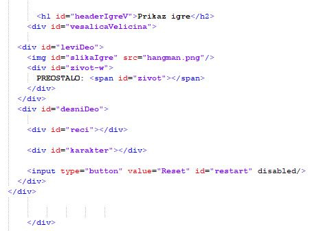

KAKO IGRATI (PRAVILA IGRE VEŠALICE)
Pravila: Vešalice je jednostavna HTML5 igra o pogađanju slučajno odabrane reči. Igrač pritiskom na panel sa slovima može da izabere slovo u svakom krugu. Ako slovo ne postoji u izabranoj reči, igrač će izgubiti jedan poen. Nakon što izgubi određeni broj poena, igrač gubi igru. Igrač će pobediti u igri ako tačno pogodi reč.
Dalje će biti prikazan kod kroz postupke kako je igra napravljenaKORAK 1) INTERFEJS IGRE (HTML IZGLED)

Igra se nalazi unutar < div id="headerIgreV"> i podeljena je na <div id="leviDeo">
i <div id="desniDeo">
Na levoj strani se nalazi:
<img id="slikaIgre"/> Slika igre. Slika je postavljena na opacity: 0 i postepeno povećavamo
na opacity: 1 što igrač više maši slova u zadatoj reči.
<span id="zivot"> Predstavlja broj preostalih pokušaja.
Na desnoj strani se nalazi:
<div id="reci"> Sve reci koje mogu pasti da se pogode.
<div id="karakter"> Sva dostupna slova (A do Z).
<input id="restart"> Dugme za resetovanje igre.
KORAK 2) STILIZOVARNJE IGRE

Pomoću CSS-a podešavamo izgled igre. Postavljamo display:flex koji nam omogućava da se slova nalaze jedna pored drugih, podešavamo veličinu i boju same igre, slova, font-a. Slika u početku neće biti vidljiva, ali ukoliko igrač bude mašio slova u zadatoj reči slika će se postepeno prikazivati.
KORAK 3) SVOJSTVA I INICIJALIZACIJA IGRE

Počinjemo sa definisanjem svih svojstava igre u JavaScript-u. Ovo bi trebalo da bude prilično razumljivo
– broj pokušaja, rečnik sa svim rečima koje mogu doći u obzir, trenutono odabranu reč, dužinu reči, broj
tačnih i pogrešnih pokušaja, preostala slova.
igra.init() je prvu koju pozivamo pri učitavanju stranice da bismo inicijalizovali igru.
Zatim pomoću for petlje prolazimo kroz velika slova iz ASCII tabele.
Koristimo promenljivu
rst koja se aktivira kada se klikne na dugme RESET i time resetovati igru na prvobitno stanje.
KORAK 4) PONOVNO POKRETANJE IGRE

Nakon što je HTML podešavanje završeno, igra.reset() će se baviti ponovnim pokretanjem igre. Pomoću reset funkcije resetuju se sve promenljive igre, izaberite drugu reč, resetujte interfejs igre.
KORAK 5) ODABIR SLOVA

Na kraju, imamo igra.check(). Ovo se pokreće kada igrač odabere slov iz abecede – Zatim
proveravamo da li je izabrano slovo u trenutnoj reči, ažuriramo rezultat u skladu sa tim. Ako je igrač
pogodio celu reč, to je pobeda. Ako ne, igrač gubi od nestanka pokušaja.
Promenljiva index nam služi da se krećemo kroz slova i na osnovu nje prikazujemo slovo umesto crtice na ekranu. Prolazimo kroz dužinu niza i za svaki pogodak nam se prikazuje to slovo. U slučaju da nam je broj pogodaka isti kao i dužina reči, onda smo dobili igru.
U suprotnom, svaki promašaj od odabranog slova smanjuje pokušaj kome smo dodeliti 5. Promenljiva ostalo čuva preostali broj pokušaja. Kada broj promašaja dostigne isti broj pogrešnih unosa onda će igra ispisati poraz.